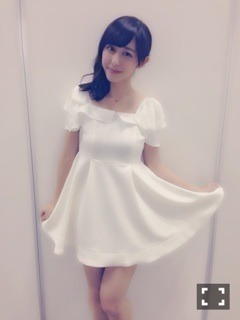
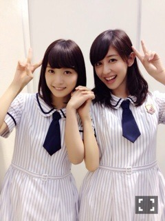
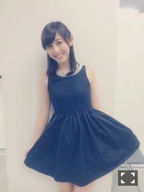
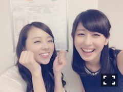
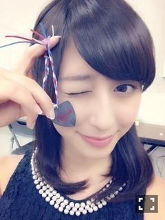
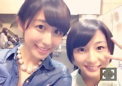
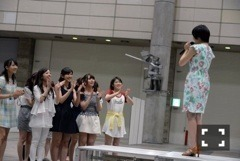
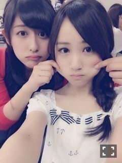

| 2014/07 24 Thu | 内容たっぷり(´>∀< ｀)ゝ |
ちはるーむへようこそ(｡-_-｡)
ずっと更新できなくてごめんなさい。。
待ってたみんなお待たせ(´･_･`)！
昔の話からさかのぼっていきます！
 横浜個別
横浜個別

ワンピース:titiy&co
真っ白なワンピースでお嬢様風にね♪
見えにくいけど肩のリボンがポイントなんだ！！
あと真っ赤なハートのネックレス◡̈
褒めてくれてありがとう(｡-_-｡)
握手楽しかったな〜♡
9thで初めて来たよって方もいて、ああ、本当ここまで頑張ってよかったなって思うことがたくさんあったよ(｡-_-｡)
本当いつも支えてくれて、応援してくれて、ありがとう。。♡
9th全国握手会in京都
ペアは〜！

だいすきまいまい♡
実は推しメン1位2位を争うくらいすき。。(｡-_-｡)まいみん。。
まいまい、ななみん、ねね
の大人で落ち着いてるメンバーが好きなの(｡-_-｡)
いやあ、握手のときも聖母でした。。♡
ちはるーむめいとの皆さんも、まいみんの皆さんも、楽しく握手してくれてありがとう！！
優しい方ばかりで嬉しかったです(﹡ˆ ˆ﹡)
また会いたいな〜♪
8th東京個別


ワンピース:dazzlin
たまにはシックにね♪
これまた褒められた(｡-_-｡)
うれしかったです(｡-_-｡)
列が見えた時嬉しさ倍増でした。。(﹡ˆ ˆ﹡)
もっともっと溢れるくらいの人で埋め尽くされるように、
もっともっと頑張るって決めた握手会でした(´･_･`)！！
本当に来てくれてありがとう。
支えてるのは皆さんです。
そして

まひろっ♡
誕生日おめでとう！！！！
まひろは元々仲良かったんだけど
去年のチームDでのディズニーから爆発的に仲良しになったよね(﹡ˆ ˆ﹡)
まひろの歌もダンスも喋り方も大好き♡
まひろのあったかい笑顔が大好き♡
まひろの仲間思いな優しい心がだいすき♡
まひろには大好きが詰まってます(﹡ˆ ˆ﹡)
これからもずっとずっとずーと仲良しでいてほしいな♪
まにらぶ！！！♡

生誕祭で見たろってぃー夢の皆さんの笑顔も、涙も、まひろに似てすごく素敵ですごくキラキラしてた。。♡
まるでひまわり(｡-_-｡)
私がいうのもなんですが、チームDのお母さん役として言わせてください。
ろってぃー夢の皆さん、
これからもうちのまひろをよろしくお願いしますm(_ _)m
そして

れなりん。。いちき先生。。
れなりんの純粋で、天然で、素直なところが大好きだよ！！
なんか愛おしいよね(﹡ˆ ˆ﹡)
そんな先生がいなくなってしまうのはとても淋しいことだけど、
大学とかも大変だろうし、すごい応援してるよ(´･_･`)！！
一緒に作ったアンダーライブにも思い出いっぱいあります(´･_･`)
素敵な3年間を一緒に過ごしてくれてありがとう。
これからもずっとよろしくね！
れなりんだいすき！！！♡
最高のフィナーレで終えたれなりんに
拍手！！！！

(byチームD)

ぷに。
アンダーライブに向けて頑張ってます！！
9thメンバー、最後のアンダーライブ。。
最高のステージを作ります(﹡ˆ ˆ﹡)！！！！
長い文、読んでくれてありがとう。
(｡-_-｡)
ばいるんっ
るんるんっ
ちはるんっ
(´>∀<｀)ゝ
コメント(214)
2014/07/24 00:00